Project Overview
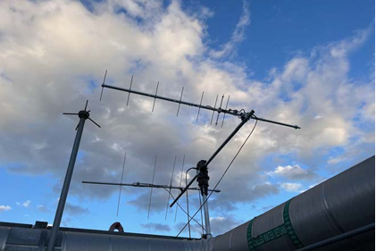Overall Goal
To design, build, and implement an operational ground station with fully functional transmit and receive capabilities able to control a Low-Earth Orbit CubeSat
Specifc Goals:
Retain Control in Tumble
Capable of operating CubeSat in the scenario of tumbling or attitude control loss
Receiving
Capable of receiving FoxTelem and Satnogs telemetry data
Transmitting
Capable of transmitting a radio signal to the CubeSat at a specific frequency and angle
Life Span (5+ years)
Structural integrity capable of operating for the entirety of the anticipated CubeSat mission duration
Timeline:
Phase 0
Planning and Organization
C
Phase 1
Simulation and Design
Phase 3
Building and Implementation
Phase 4
Testing
Phase 5
Conclusion
Customer & Impact
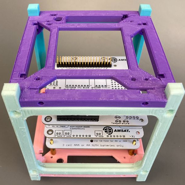Stakeholders
Investors
California Space Grant, Azusa Pacific University ECS, WM Keck Foundation
Academic
University CubeSat programs (Cal Poly, University of Virginia, etc.)
Specifications
Compliance with NASA’s Launch Services Program, AFSPCMAN 91-710
Budget
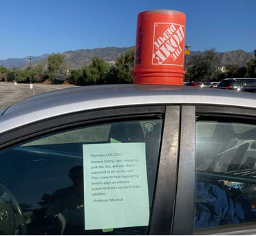$9,300
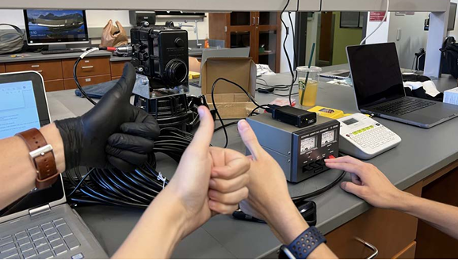Originally: $3,000
California Space Grant ECS Senior Design Fund WM Keck Grant Extension
Bill of Materials
Ettus URSP B205 Mini-i: $1350
Yaesu G-5500DC Az/El Rotator: $760
M2 Directional Antenna System 2M/440: $650
Specifications
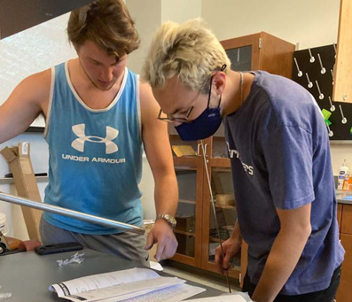Omnidirectional Antenna
140-144 MHz
Circular Polarization
Directional Antennas
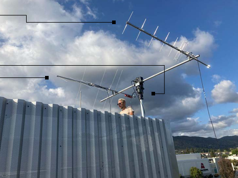440 Yagi
432-438 MHz, Circular Polarization
Rotators
Az 0-450°, El 0-180°
2M Yagi
140-144 MHz, Circular Polarization
Mechanical Structure
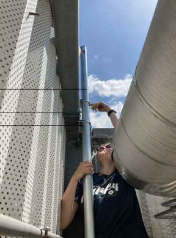Mast
10' Galvanized Steel, 2" diameter
Steel Plates
8" x 6" Steel Plate, Anti-rotation
U-bolts
2" Saddle Clamps, Lock washer, 1/2" bolt
Mirror Supports
Duplicate plate structure at base and top of masthead
Antenna-Related Software
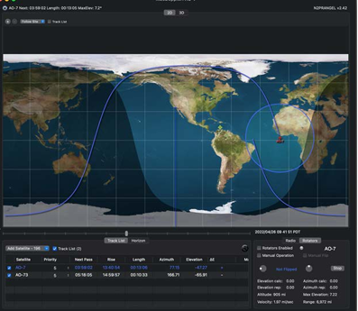MacDoppler
Mac-based rotator control software
FoxTelem
AmSat satellite reception database
SatNOGS
Open-source ground station reception software
Electrical Components
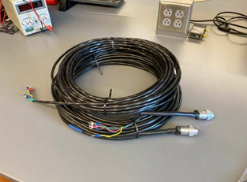 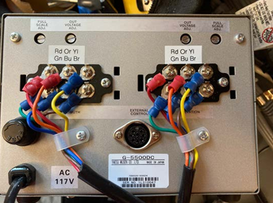Rotator Control Cables
Carry control commands and position readings
Coax
LMR-240-Ultraflex and LMR-400 connects antennas to radios
USB
USB connections to radios and rotator controllers
Design Choices
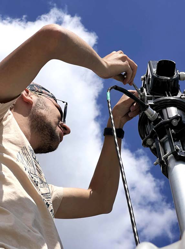Mount a non-permanent system on pre-existing rooftop structure
Both Az/El rotators
Vertical rotator setup
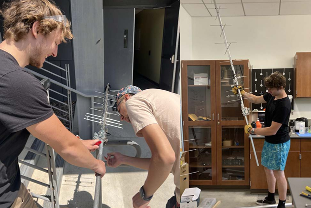Steel pole & zinc washer antenna counterweights secured with screws
Maximum length CW pipe for less weight overall It’s the kokofruit 22
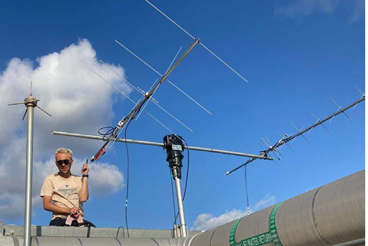440 Yagi to the left of the rotators, and 2M Yagi to the right
Both at a 45° angle
Re-mounting omnidirectional antenna
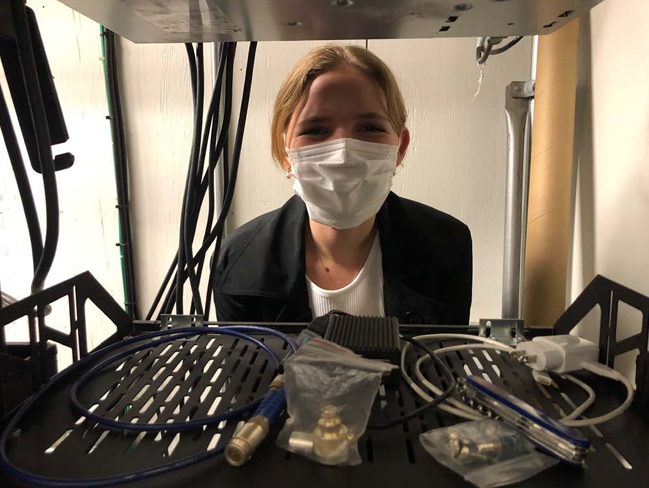Use MacDoppler for automated rotator control
Use Raspberry Pis to receive satellite transmissions with FoxTelem and SatNOGS
Results/Conclusion
Satellite Tracking
Yaesu rotators in tandem with MacDoppler have successfully tracked AMSAT LEO CubeSats to +/- 1°
Lifespan
Estimates of critical hardware project a 5+ year lifespan with minor maintenance
Reception
Eggbeater has successfully received a signal via FoxTelem
Antenna Pointing
Rotator system is successfully able to orient towards a point to +/- 1°
Software
Foxtelem is capable of tracking and receiving while Satnogs has been implemented but requires testing
Transmission
Transmission testing will occur once Ettus radio arrives and is installed in existing infrastructure

Challenges
Pi Updates & Networking
Rotator Range
Software for the Yaesu rotator controller resulted in a limited elevation range
Purchasing
Purchasing permission issues caused delays amplified supply chain problems
Future Work
Switching borrowed Yaesu radio for the more versatile Ettus SDR
Installing a transfer switch between the 2M and 400 antennas
Performing additional testing to establish reception and transmission capabilities
Ensuring transmission antenna is properly set up
Determine and correct error with radio frequency
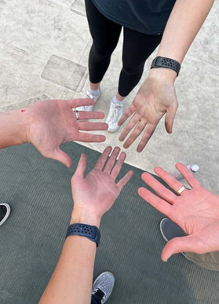Acknowledgements
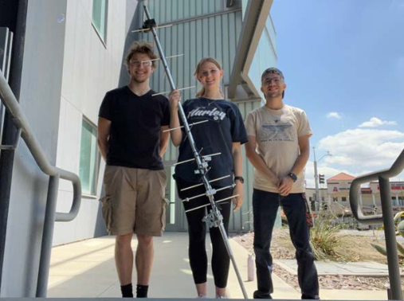Dr. James Yeh
Team supervisor and consultant for project and budget requirements
Neil from the U.K.
Troubleshooting correspondent for Yaesu elevation parameters
Lelani Bautista
Co-contributor in the design phase of the project
God
“Whoever abides in me and I in him, he it is that bears much fruit, for apart from me you can do nothing.” (John 15:5 ESV)
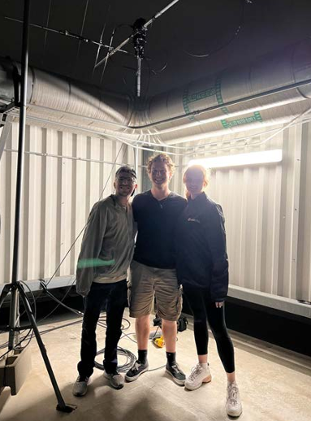 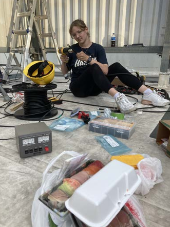